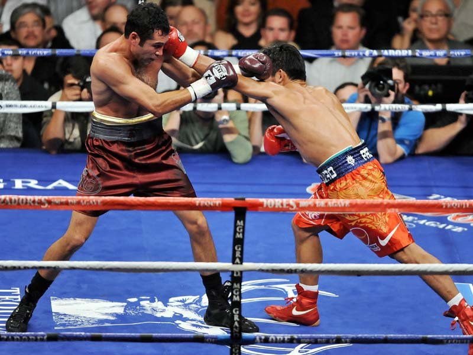

What is Boxing?
Amateur boxing bouts comprise three rounds of three minutes for men, and four rounds of two minutes for women, each with a one-minute interval between rounds.
Men's senior bouts changed in format from four two-minute rounds to three three-minute rounds on January 1, 2009.
Amateur boxing rewards point-scoring blows, based on the number of clean punches landed, rather than physical power.
Boxing Stances
Orthodox

Southpaw

- Southpaw stance is where the boxer has the right hand and the right foot forward, leading with right jabs, and following with a left cross right hook.